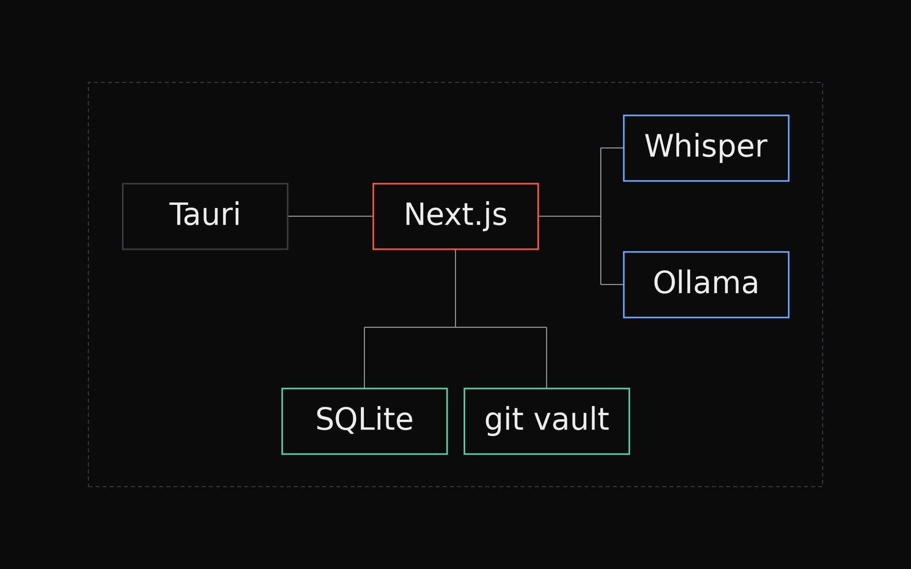
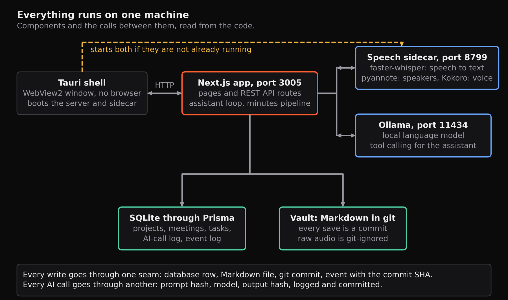
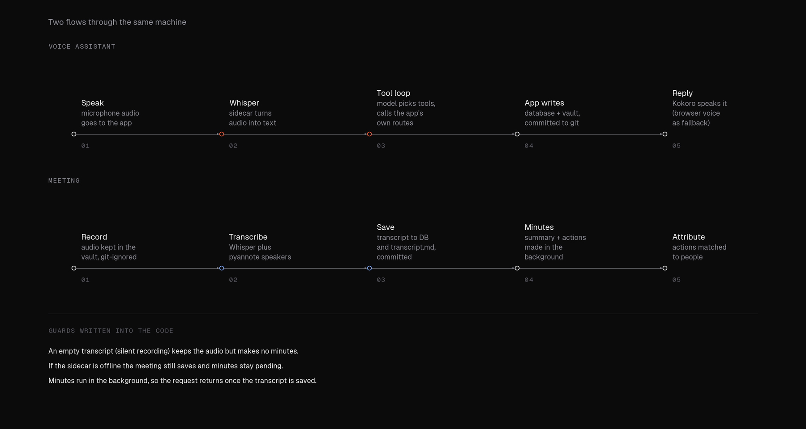

Software · Jun 2026 – present · Personal tool
Local-first work hub
Projects, meetings and one-to-ones in one desktop app that never leaves the machine.

- Localspeech, model and data stay on the machine
- 4on-device models: speech to text, speaker labels, language, speech
- EveryAI call logged with prompt and output hashes and committed to the git vault
- 1desktop app, built with Tauri
A desktop app for managing projects, meetings and one-to-ones, with an on-device voice assistant, meeting transcription with speaker labels, and generated minutes and action items. Everything lives in a git-versioned vault, which doubles as an audit trail.
01What it does
Talk to it, and it plans your day, schedules and prepares meetings, records and transcribes them, attributes action items to the right person and keeps one-to-one history for the next conversation. Projects have phases, milestones and a backlog, and everything is clickable from everything else: a task opens its project, a meeting opens its minutes.




02Why local
A tool that listens to your meetings and reads your notes should not send them anywhere. Speech recognition, the language model and the speech synthesis all run on the machine, and the data is kept as plain files in a git repository, so every change is a commit and the history is the audit trail.
03What went wrong, and the fixes
A voice assistant makes failures obvious. Silent microphone captures produced a transcript of one repeated word, so recordings now check the signal level and refuse to process silence. A slow reasoning preamble in the language model truncated the minutes and took minutes to run, so minutes now generate in the background with reasoning off.